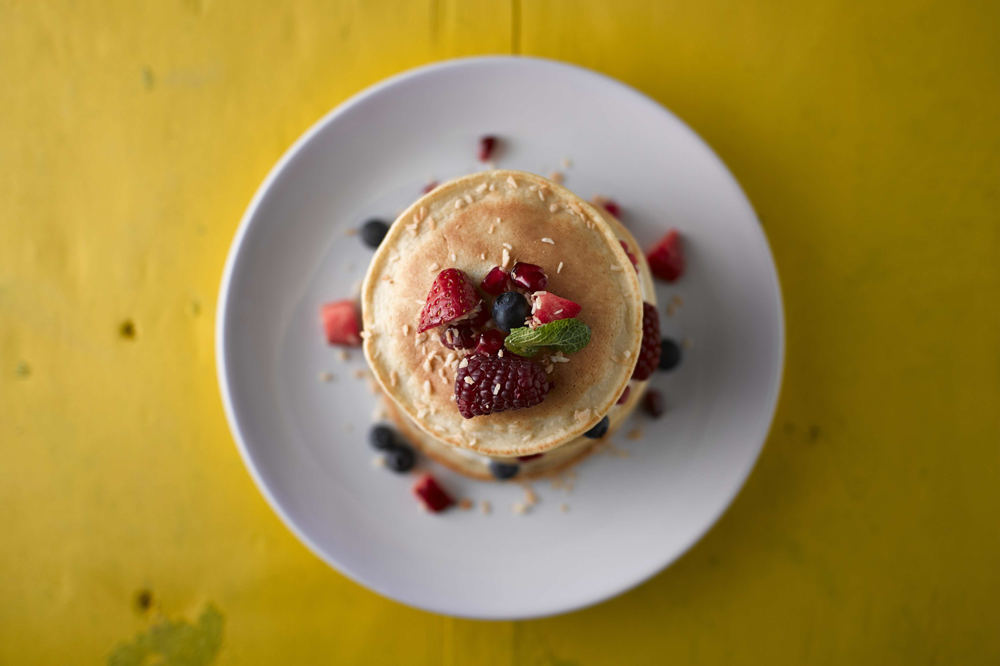

1 Mug Pancakes

Résumé
- La pâte : 5 minutes
- Cuisson : 10 minutes
- Difficulté : facile, Budget : €--
Préparation
Ustensiles
- 1 mug (env. 35cl)
- 1 saladier
- 1 petite crêpière ou 1 poêle
- 1 cuillère à soupe
- 1 fourchette ou 1 fouet
Ingrédients
Pour une douzaine de pancakes environ
- env. 200g farine
- env. 250ml de lait
- 1/2 à 1 sachet de levure chimique
- 1 oeuf
- 2 cuillères soupe d'huile
- 2 cuillères soupe de sucre
Astuce : Vous n'avez pas d'oeuf ? Incorporer un peu de bannane écrasée dans la préparation.
Instructions
La pâte
- dans le mug, mélanger farine, sucre et levure
- Réserver dans un saladier
- de nouveau dans le mug : bien mélanger l'oeuf et l'huile puis ajouter le lait
- verser progressivement le contenu du mug dans le saladier en mélangeant énergiquement
- c'est prêt
La cuisson
Idéalement sur une petite crêpière, verser simplement la quantité de pâte souhaitée. Laisser cuire jusqu'à l'apparition de petites bulles sur le dessus du pancake puis retourner
À la poêle, même principe à feu doux
Astuce : Ajouter un petit bout de beurre à fondre sur la pile de pancakes, un régal.
Dégustation
Parfait avec un peu de beurre de cacahuète, avec une bonne confiture ou tout simplement avec un peu de sucre
Astuce : Si vous n'avez pas d'accompagnement en tête, verser un peu de sirop d'érable avant de servir.